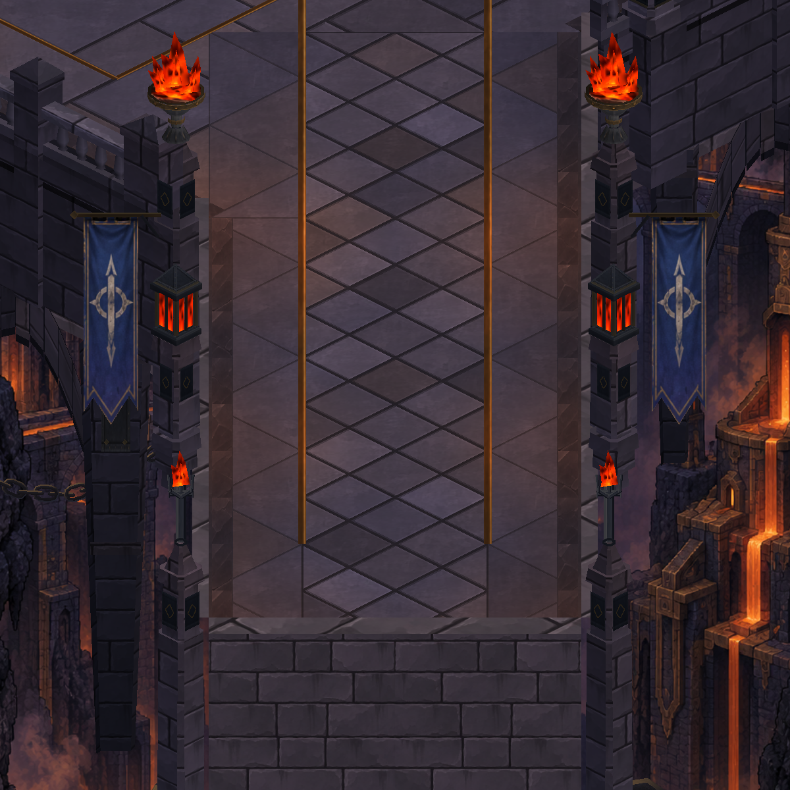
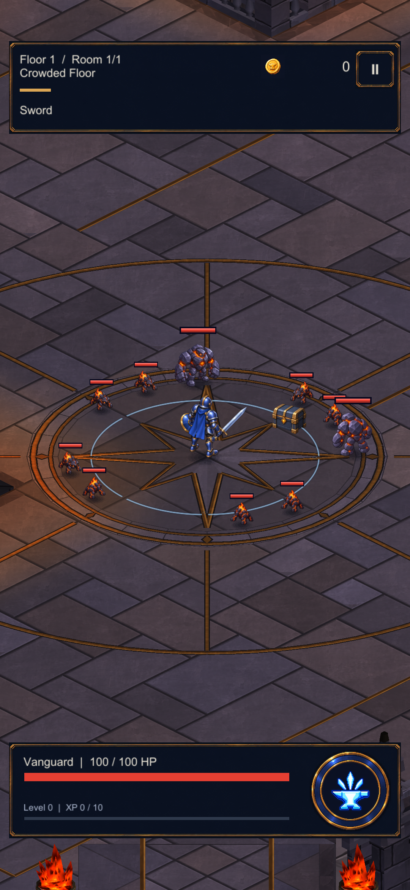

Dökümhane — kapı ve taş mimari
Gerçek Unity görüntüleri: solda önce, sağda sonra. Kapı kuleleri, köprü ve avlu sütunlarında ortak yerel ışık; kapıda metal bağlantı şeritleri ve dikey kayıtlar. Küçük yüzey düzenlemesi, yeni harita tasarımı değil.
Doğrulama ve cihaz durumu
overview — önce / sonra
gate-detail — önce / sonra
bridge-detail — önce / sonra


point-2 — önce / sonra


Telefonda önce / sonra
Sabit S23 incelemesi: her iki sürümde 59,9 FPS, GPU yaklaşık 3,7 ms.
Aynı yürüyüş — kapıya yaklaşım